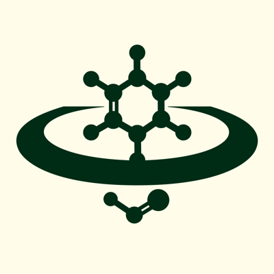

The hitpick commands belong to the Syto bundle. They analyse a docked pose in its binding site, draw and score its non-covalent interactions, flag clashes, strained torsions and stranded hydrogen-bond donors, and run active learning over the grades given to poses. See also: Hit Picking Handbook, Hit Picking Learn, ViewDock
Analysis • Display • Handbook • Torsions • Active learning
A typical start:
open receptor.pdb
open poses.mol2
hitpick setup
hitpick analyze
Options that take true or false default to true when the value is left out.
hitpick setup [ receptor-model [ ligand-model ]]
Perceive the receptor: atom types, charges, rings, donors and acceptors. Run once per receptor, before anything else. Without arguments the receptor and the docked poses are found among the open models.
hitpick analyze [ ligand-model ]
Analyse one docked pose and draw its interactions. Without an argument the displayed pose is used. With ViewDock running this happens automatically as you step through its table. hitpick analyse is the same command.
hitpick report
Write a text listing of the current pose to the Log: each interaction with its geometry, quality and flags, then clashes, strained torsions and stranded H-bond donors/acceptors.
hitpick clear
Remove everything hitpick has drawn.
hitpick show [ types ]
Enable interaction types and redraw. Types is a list of one or more of: hbond, hbond_charged, weak_hbond, salt_bridge, pi_stack_parallel, pi_stack_tshaped, cation_pi, halogen_bond, hydrophobic. Names can be shortened to a unique prefix; stacking means both stacking types, hbonds both hydrogen-bond types, all everything and default the default set (everything except weak_hbond and hydrophobic). Without an argument the default set is enabled.
hitpick hide [ types ]
Disable interaction types, named as for hitpick show. Without an argument all types are disabled.
hitpick lengths [ true | false ]
Show or hide the distance label on each interaction line.
hitpick angles [ true | false ]
Show or hide the angle terms in the labels.
hitpick limits [ true | false ]
Put the literature limits in each label next to the measured value, instead of showing them by colour only.
hitpick clashes [ true | false ]
Draw or hide van der Waals clashes: red for a clash, dark red for a severe one, orange for a clash within the ligand.
hitpick stranded [ donors true | false ] [ acceptors true | false ]
Choose which stranded hydrogen-bond atoms are highlighted. A stranded atom is a buried N or O donor or acceptor with no hydrogen-bond partner. Donors are on by default; acceptors are off because they are flagged more often and more often harmlessly. Each highlighted atom gets a faint magenta wire cage, a two-line label and a row in the panel. The pose is analysed again.
hitpick reveal [ true | false ]
Display the residues the interactions point at. false hides only the atoms this command displayed.
hitpick width [ w ]
Set the thickness of the interaction and clash lines, for example hitpick width 0.05. Without a value the current width is reported.
hitpick panel [ true | false ]
Detach the Hit Picking Handbook panel into its own window, where it can be widened to two or three columns; false docks it again.
hitpick hover [ true | false ]
Show hitpick detail in the hover balloon: role and basicity for an atom, measured terms for an interaction line, overlap for a clash, angle for a rotatable bond. false restores the standard balloon.
hitpick explain [ atom-spec ]
Show the handbook entries for an atom in the panel and highlight the group it belongs to. Without an argument the selected atom is used.
hitpick autoexplain [ true | false ]
Explain an atom automatically whenever exactly one atom is selected, for example by ctrl-click. On by default once the panel is open.
hitpick labels [ pKBHX | pKBH+ | off ]
Label the ligand atoms in 3D with handbook values (default pKBHX). pKBHX is hydrogen-bond acceptor strength; pKBH+ is the pKa of the conjugate acid. Each label is the value of the unsubstituted parent compound, with the family range in brackets; a * marks a value flagged for review. off removes the labels.
hitpick scale [ pKBHX | pKBH+ [ all-elements ]]
Print a basicity scale to the Log with the last clicked group marked. All-elements (true or false, default false) includes acceptor families of every element.
hitpick scaleplot [ true | false ]
Show or hide the basicity scale plot in the panel.
hitpick torsions [ all ]
List the flagged rotatable torsions of the current pose in the Log, judged against quantum-mechanical torsion scans of the same bond class. hitpick torsions true lists every rotatable bond.
hitpick torsionprofile [ all ]
Plot the QM energy profile for the torsions of this pose, with the pose's own angle marked. true includes the torsions that were not flagged.
See Hit Picking Learn for the workflow.
hitpick learn panel
Open the Hit Picking Learn panel.
hitpick learn collect [ limit ] [ wait true | false ]
Analyse and featurise the poses. Runs in the background and returns at once; wait true blocks until it is done, for scripts. Limit restricts it to the first N poses.
hitpick learn grade good | maybe | bad [ model ]
Grade a pose (default: the displayed one). The grade is also written to ViewDock's rating when ViewDock is running.
hitpick learn train [ epochs ] [ wait true | false ]
Train the model on the grades given so far (default 120 epochs). Runs in the background unless wait true.
hitpick learn next [ count [ uncertainty | disagreement | prediction ]]
List the poses worth looking at next (default 10, by uncertainty). uncertainty: ungraded poses the model is least sure about. disagreement: graded poses where the model disagrees with you. prediction: the ungraded poses it predicts are best.
hitpick learn worklist [ count [ strategy [ off ]]]
Put the suggestion list (default 20 poses) into the ViewDock table in the model's order. A pose leaves the list when it is graded. The list is not re-ranked while it is being worked. Giving true for off, or finishing the batch, returns the table to ViewDock.
hitpick learn apply
Write the model's predictions into the ViewDock table.
hitpick learn terms [ names | auto | none ]
Choose which of the docking program's score terms the model may learn from (up to seven). Without an argument the current choice and all terms carried by the poses are reported, with unusable ones (row numbers, constants, failed values) marked. auto picks for you; none uses no score terms. Poses do not need to be analysed again.
hitpick learn assume [ grade [ forget [ check ]]]
Treat every unrated pose as grade (default good), for a list that was rated by exception and walked to the end. With check (default true) the assumption is first tested against the trained model and the result reported. hitpick learn assume forget true removes the assumed grades. Do not use it on a list you have not finished.
hitpick learn status
Report the state of the model and the number of graded poses.
hitpick learn save path
Save the grades and the model to a JSON file.
hitpick learn load path
Load grades and a model saved with hitpick learn save.
hitpick learn cancel
Stop background analysis or training.